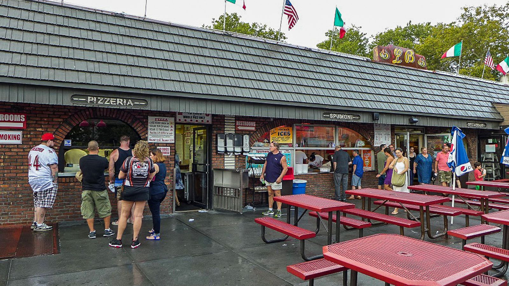
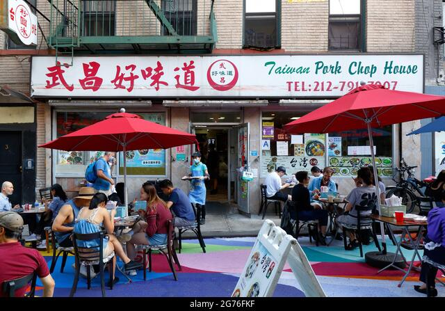

NYC Spots 🗽
L&B Spumoni Gardens
While their pizza is good, I think what makes me love the place is the memories I made there. I remember eating in the outdoor seating and having a good time with my family. And after we'd eat my dad would buy us ice!

Taiwan Pork Chop House
This restauraunt could probably be considered a hole in the wall. Located in Chinatown Manhatten this restauraunt also holds lots of memories with my family and also good food
